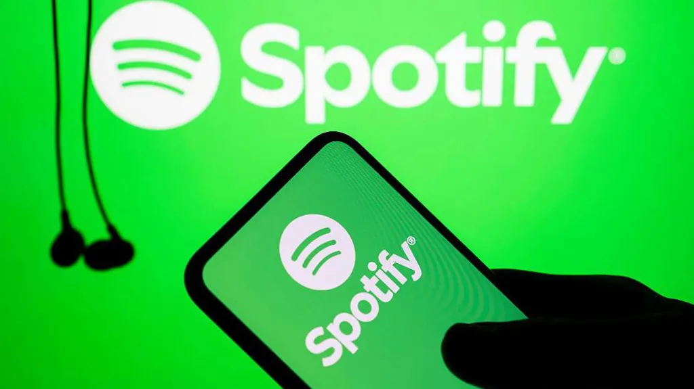

Loren ipsum
A song which has been streamed millions of times in Sweden has been banned from that country's music charts because it was created by Artificial Intelligence (AI). Called I know, You're Not Mine - Jag vet, du är inte min - it is currently top of the Spotify playlist of Sweden's most popular songs. But the singer is a digital creation and the country's music industry body has blocked the track from its official chart listings. "Your steps in the night, I hear them go," sings the artist known as Jacub in a haunting voice. "We stood in the rain at your gate and ran out and everything went fast. Now I know you are not mine, your promises came to nothing."
15.1.2026